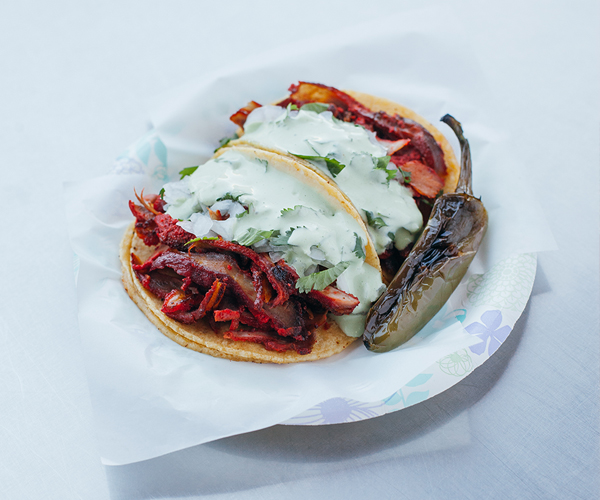

Adobada Tacos

Growing up in San Diego I fancy myself to be a Mexican food connoiseur. There's virtually nothing that I won't eat from any Mexican food establishment, however, there is one item that surpasses them all: adobada tacos.
Adobada tacos are pan cooked tacos with marinated pork. Adobada, which translates to "marinated" in Spanish, typically features pork loin, pork shoulder, or pork butt. The meat is marinated in adobo sauce, chiles, orange juice, coriander seeds, oregano, cumin, garlic, and other spices. My favorite adobada tacos have the meat continuously marinating on a spit with a pineapple appended on the top for moisture retention. Some of the best adobada tacos I've had come from a TJ style taco stand in the south bay area called Tacos El Gordo. I've replicated their tacos and I'm going to share that magic with you today.
Ingredients
- 2 guajillo chiles
- 2 ancho chiles
- 2 whole garlic cloves, peeled
- 1/2 bar achiote paste
- 1/4 c. distilled white vinegar
- 1/2 c. fresh-squeezed orange juice
- 2 lbs boneless pork shoulder, cut into slightly larger than 1/4 inch thick slices
- small pineapple, peeled, cored, and thinly cut into 1/4 inch slices
- 10 slices of bacon
- 4 Tbsp of canola oil
- 1 cup of white onion,peeled and finely chopped
- 1 c. fresh cilantro, finely chopped
- 6 limes cut into quarters
- 10-20 small corn tortillas
Directions
- Soak the guajillo and ancho chiles in a bowl of warm water for 10 mins to rehydrate them, then drain the water.
- In a blender, combine the ancho and guajillo chiles, garlic cloves, white vinegar, orange juice, and salt and pepper pinch to taste. Secure the blender's lid and blend until all ingredients thoroughly combine to a paste-like consistency. Set aside.
- Place a slice of pork shoulder between two clean sheets of plastic wrap. Use a meat mallet or rolling pin to gently pound the meat until it is quite thin, about ¼-inch thick. Repeat the process until you've flattened all pieces of pork.
- Grease a medium-sized baking sheet with cooking oil to help keep your meat from sticking. Once oiled, place a couple of slices of pork on the pan, then season with salt and pepper.
- Spread adobada marinade generously over the pork, then top with 3 pieces of bacon and pineapple slices. Start your next pork layer on top of the pineapple and repeat the process until you run out of ingredients. Your pan should have one large layered stack of meat and pineapple. Place the baking sheet in the fridge and leave it to marinate for 2 hrs.
- After the meat marinades for 2 hrs, preheat your oven. Pull the baking sheet from the refrigerator and let the pork stand at room temperature for 15 mins.
- Drizzle the meat with oil, then place in the preheated oven to roast for 40-50 mins.
- Once cooked, pull the baking sheet from the oven and let the pork rest for 10 mins. Then, transfer the pork stack to a cutting board, keeping the pan's oil for later.
- Start carving your pile with a sharp knife. Start at one edge, thinly slicing downwards for thin, cooked strips that easily slide into your corn tortillas.
- Once the adobada meat is all sliced, use a pastry brush to rub the pan's oil over both sides of your tortillas. Place a cast-iron skillet over medium-high heat and place the tortillas in the pan until they're sufficiently warmed. Remove the tortillas from the pan.
- Assemble your tacos with sliced pork, fresh onion, cilantro, cooked pineapple, and a squeeze of fresh lime juice from the wedges. You can also add fresh salsa, sour cream, and any other taco favorites.
- Serve and enjoy!